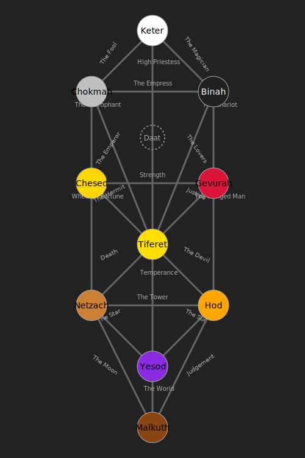

The World of K10
The world of K10 is defined by a fundamental struggle between structure and chaos. Magic is the art of channeling divine, reality-shaping power through a series of ten cosmic filters known as the Sefirot. This is a force for order and creation, but it is shadowed by the parasitic decay of the Qliphoth and the absolute void of the Abyss.
Nations and Factions
The practice of this magic has shaped global society. Three major philosophical factions dominate the political landscape, each tied to one of the pillars of the Tree of Life:
- The Adamant Concord (Pillar of Severity): Society through structure and limitation.
- The Flowing Garden (Pillar of Mercy): Wisdom through growth and freedom.
- The Way of the Middle Pillar (Pillar of Balance): Power through harmony and synthesis.
Their constant conflict over the "correct" way to use magic is the primary driver of world events, often meeting in the neutral city of Nexus.
The Tree of Life
Below you will find a curated guide to the major sections of the wiki to help you get started.
1. Getting Started
2. World & Lore
- Cosmology: The deep lore of the Sefirotic & Qliphothic Realms, the Abyss, and the Husks.
- Locations: A guide to the world's neutral hub and its unique professions.
- Society & Culture: How mages and the Unawakened coexist, and the lives of common mages.
3. Magic System
- Core Mechanics: The rules for progression, corruption, and advanced spellcasting.
- The 10 Sefirot: Detailed guides to each of the 10 magical pathways.
- The 22 Paths: The connections between Sefirot and the Arcana progression system.
- Advanced Topics: Guides to rituals, artifacts, and the visual aesthetics of magic.
- Glossary
4. Character Guides & Reference
- Archetypal Builds: A catalog of pre-made character concepts and builds.
- Character Exemplars: A list of example NPCs to use or draw inspiration from.
For a full list of quick-reference tables, please see the "Catalogs" section in the sidebar navigation.
5. Factions at War
- Strategic Doctrines: Overviews of factional strategies and responses to unconventional threats.
- Main Factions' Militaries: A look at the Adamant Phalanx, Living Tide, and Hidden Dagger.
- The Arcanum Legions: The 22 heretical, specialized legions.
- Battle Reports & Case Studies
6. In-World Library
- Factional Viewpoints: How each faction sees the nature of magic.
- Sociology & Culture: Studies of the factions' cultures, art, and training methods.
- The Unawakened Library: Texts from the perspective of non-mages.
- Forbidden Texts: Heretical writings on the nature of the Qliphoth.
- Modern Treatises: A modern, pragmatic analysis of magic as a system to be optimized.